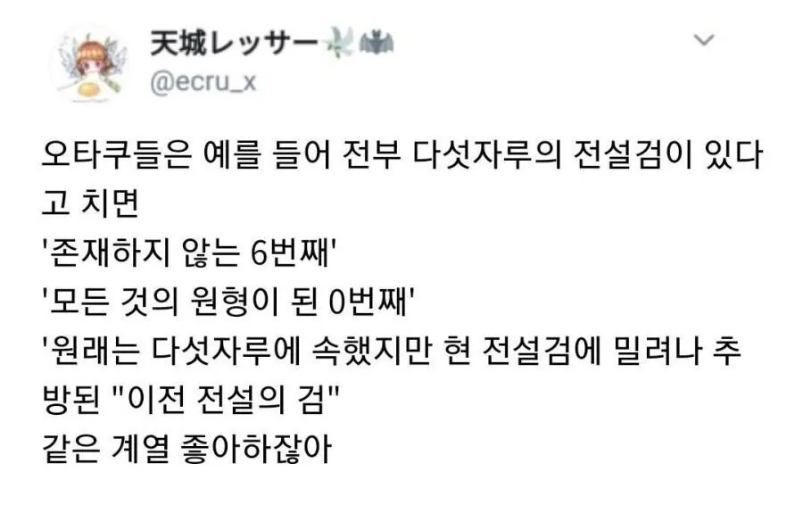
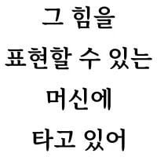

오타쿠들이 좋아하는 클리셰
댓글
어우 입맛이 싹도네 ㄹㅇㅋㅋ
저런거 대부분 폐기된 전설검은 사용자 이슈로 저점이 낮으니 성능 못뽑아서 폐기되고
고점이 낮아지는대신 저점을 올린 양산형 전설검이 자리잡는 그런 클리셰잖아


원 오프 타입 못참지
5개 다쓰는거 좋아하는뎅~
대장장이는 인간의 왕을 위해 네번의 망치를 휘둘러 세 자루의 검을 만들었다
용을 죽이는 검
요정을 죽이는 검
난쟁이를 죽이는 검
왕은 궁금해 하며 물었다. "망치는 네번인데 어찌하여 검은 세자루 인가?"
대장장이는 대답했다. "셋이 길 하였으니 하나는 흉이 따릅니다"
"흉이라니"
"왕을 죽이는 검. 이것이 길에 따라온 흉입니다."
왕은 크게 노하여 대장장이를 잡아 참하였지만 왕을 죽이는 검은 그 어디에서도 보이지 않았으니 굳건하리라 믿은 왕좌 위에서 애처롭게 떠는 늙은이만 남았을 뿐이다
오..
맛있네요 이거
더써줘요...
툭별할 것 없는 평범한, 하지만 인간의 의지가 담긴 검
탑승자를 사망하게 만든 프로토타입 기체
적노 ㄷㄷㄷ
모든것의 원형이되는 0번째 막 보기만해도 두근두근거리지
블리치네
0번째를 빌런이 들고 있는게 젤 맛있지
배신당한 전직 히어로? ㅋㅋㅋㅋ
'짝을 이루는 또다른 다섯자루'
카타나 가타리 생각나네 ㅋㅋ
나이트런 보면 저 비슷한 설정 계속 튀어나옴 ㅋㅋ
딱 나이트런 생각했다
그냥 오타쿠 그자체가 만든 설정 ㅋㅋ
생각해보니까 그러네 무술의 원형, 마법의 원형, 삭제된 넘버, 프로토타입, 위험성으로 폐기된 개체 다나오넼ㅋㅋㅋㅋㅋㅋㅋㅋㅋㅋㅋㅋㅋㅋㅋㅋㅋㅋㅋㅋㅋㅋㅋㅋㅋㅋㅋㅋ
긴급점검
개드립에는 가입시 1렙 부터 시작하지만
정말 일부 특수인들은 0렙에 도달한다고 한다
1렙에 딱코로 개드립콘을 사면 0이된다 나도 모르고 싶었다
뇌절 심해지면 0번의 원형이 된 태고의 4자루 이런거 추가설정으로 들어감 ㅋㅋ
5개 검이 합체하는건 없나
난 악을 멸하는검을 쓰는 주인공이 최종보스랑 싸우는데 최종보스는 본인의 행동이 악이라고 생각하지 않기때문에 통하지 않는 스토리가 좋음
맛있네
그 말이 생각난다. 악당의 신념이 더 올곧아보이면 그때부터 주객전도가 되어서 독자들도 악역을 응원하게 되고.. 오히려 주인공이 쩌리가 되는 케이스가 된다고 ㅋㅋㅋㅋ
10에서 1를 지워 0이 되는 사례도 있는데..
누가 에스파다는 1번부터 10번까지라고 했냐?
녹색 레인저
캘리번 ㅋㅋㅋ
존나 맛있는데?
사실 따지고보면 프로토 타입은 견본품이라 후대보다 사양이 구릴수밖에 없다고...
사양이 너무 높지만 부작용이 미쳐돌아가서
후대작은 부작용을 없애고 사양을 줄였고
주인공은 운좋게 부작용 없이 프로토 타입 사용이 가능해서 그걸로 무쌍하는데
알고보니 탄생의 비밀 때문에 사용 가능했던 거였다...?
너무 무겁다며 전설의 5검에서 추방 당한 6번 째 검은 시골 농기구로 환생했지만 어째선지 용사들이 나를 찾고 있다
평범한 검이지만 소유자가 각성하면 전설의 검과 맞먹는 성장형 검이라던가
로젠메이든이 칼에서 인형으로 바뀌었지 갬성은 딱 이건데 ㅋㅋ
초회 불량품 1돌에 쌍둥이34돌에 가짜 7돌에..
0번검 스타일 좋아함
너무나 강력해서 아무도 다룰 수 없었기에 각 분야에 특화된 형태로 다운그레이드한 5자루의 검
세븐체인저 제이아크 화이트레인저
원탁의 열두 기사가 어린 왕의 폭정을 도우니 한때 선왕을 모시고 전장을 누볐던, 음유시인들조차 전설로 여기던 태초의 기사가 돌아오리라
영식 ㄷㄷㄷ
2차대전때 일본애들 양산능력이 구려서 일선 병기들 지랄날 때 윗사람들 시범 보여주려고 만들었던, 그나마 제 성능 나온 프로토타입들이 저 클리셰들의 '원형이 된 0번째' 들이지 ㅋㅋㅋ
벌써부터재밋네